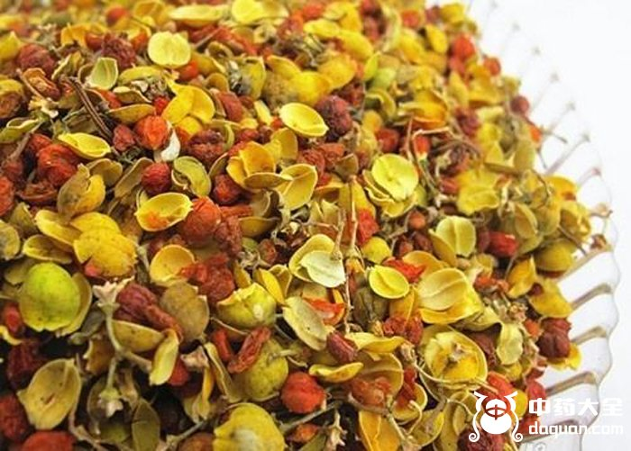
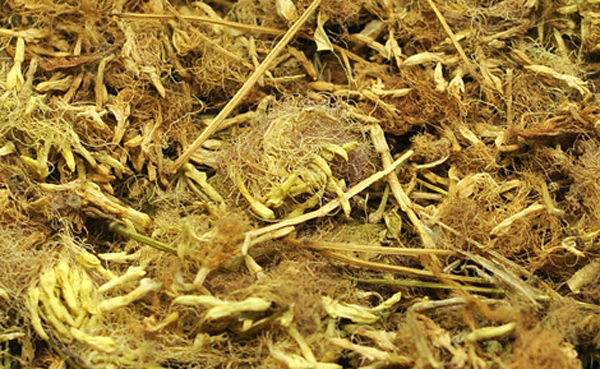
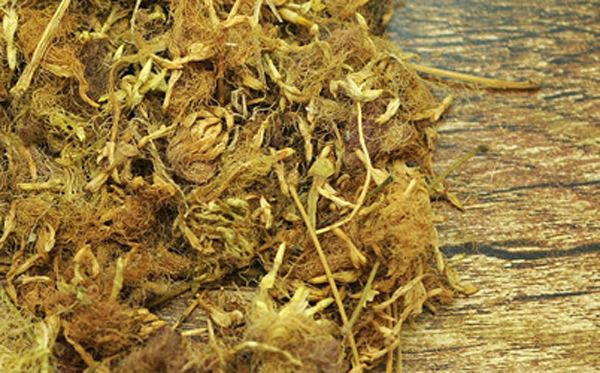
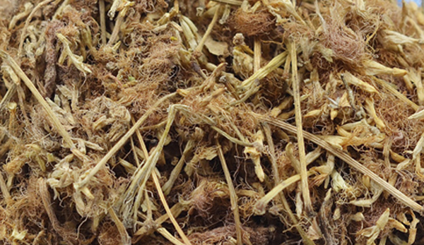

合欢花具有安神养心、活络舒郁的中药，很多人喜欢合欢花当保健茶饮用， 是因为它有滋补气血的功效，那么具体合欢花的功效与作用还有哪些呢，中药大全小编和大家一同来看看。

1、改善睡眠
合欢花具有镇静、睡眠的功效，对于入睡困难的人群而言，常喝合欢花茶可以改善入睡困难的症状，而且对睡眠质量也有所提升。
2、补气养血

合欢花有滋补气血的功效，对于贫血、面色偏黄的人群，服用合欢花会使面色红润起来，养足了气血，身体体质自然也变好了。
3、改善视力
合欢花性味甘，平，有清心明目的功效，长期对着电脑工作的人群，可以用合欢花泡茶，缓解视觉疲劳，长期使用你的眼睛会越来越亮。
4、活络止痛
合欢花可以通经活络，对痛经症状有所缓解，但不要在月经第二天使用，因为它具有活络的效果，会让月经量增加。
5、养颜祛斑

总有小姐姐把合欢花茶当水喝，这是因为合欢花有养颜祛斑的作用，它清热的功效，把体内的毒素排出，自然肤美貌白了。
1、合欢花不能长期服用【会产生依赖】
合欢花哭含有一定的安定，可以治疗失眠，如果长期服用，会产生依赖性。建议不要长期喝，偶尔喝有助于心情舒畅、头脑清晰。
2、合欢花粉制作要防护

合欢花里面含有一种合欢皂甙的物质，这种物质进入生气会溶解红血球，如果通过静脉注射进入身体，溶解红血球的作用会增大，产生毒性。合欢花粉末进入呼吸道会引起咽喉肿痛、咳嗽等症状，所以合欢花制粉的过程中要带上口罩。
3、孕妇慎用
怀孕的人本身由于胎儿压迫膀胱等部位，容易引起便秘、火旺，如果食用合欢花会加大内火和便秘的程度，因此不适合用合欢花。
4、肠胃虚弱者慎用
肠胃虚弱的人群，如果患有肠道疾病是不适合服用合欢花茶的，特别是胃溃疡、胃炎患者。
以上为合欢花的功效与作用以及禁忌，希望对您有所帮助。